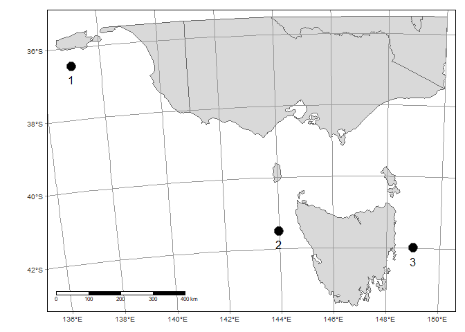

Three ways to calculate distances in R
Calculating a distance on a map sounds straightforward, but it can be confusing how many different ways there are to do this in R.
This complexity arises because there are different ways of defining ‘distance’ on the Earth’s surface.
The Earth is spherical. So do you want to calculate distances around the sphere (‘great circle distances’) or distances on a map (‘Euclidean distances’).
Then there are barriers. For example, for distances in the ocean, we often want to know the nearest distance around islands.
Then there is the added complexity of the different spatial data types. Here we will just look at points, but these same concepts apply to other data types, like shapes.
Example data
Let’s look at some example data. It is just a series of points across the island of Tasmania. We are going to calculate how far apart these points are from each other.
We’ll use sf for spatial data and tmap for mapping.
Here’s a map:
tm_shape(stas) +
tm_polygons() +
tm_graticules(col = "grey60") +
tm_shape(pts) +
tm_symbols(col = "black") +
tm_scale_bar(position = c("left", "bottom")) +
tm_shape(pts) +
tm_text("pt", ymod = -1)
Note I’ve included a scale bar, but of course the distance between longitude lines gets closer at higher latitudes.
Great circle distances
The first method is to calculate great circle distances, that account for the curvature of the earth. If we use st_distance() with unprojected coordinates (ie in lon-lat) then we get great circle distances (in metres).
m <- st_distance(pts)
m/1000
## Units: [m]
## [,1] [,2] [,3]
## [1,] 0.000 821.5470 1200.7406
## [2,] 821.547 0.0000 419.5004
## [3,] 1200.741 419.5004 0.0000The matrix m gives the distances between points (we divided by 1000 to get distances in KM).
Euclidean distances
Another option is to first project the points to a projection that preserves distances and then calculate the distances. This option is computationally faster, but can be less accurate, as we will see.
We will use the local UTM projection. So you can see what this looks like, we will project the land too.
tas_utm <- st_crs("+proj=utm +zone=55 +datum=WGS84 +units=m +no_defs")
stas2 <- st_transform(stas, crs = tas_utm)
pts2 <- st_transform(pts, crs = tas_utm)
tm_shape(stas2) +
tm_polygons() +
tm_graticules(col = "grey60") +
tm_shape(pts2) +
tm_symbols(col = "black") +
tm_scale_bar(position = c("left", "bottom")) +
tm_shape(pts) +
tm_text("pt", ymod = -1)
Note how it now bends the lat/long lines. This happens because we are projecting a sphere onto a flat surface. The UTM will be most accurate at the centre of its zone (we used Zone 55 which is approximately centred on Tasmania).
If we were interested in mapping the mainland of Australia accurately, we’d use a different UTM zone.
Now we can calculate Euclidean distances:
m2 <- st_distance(pts2)
m2/1000
## Units: [m]
## [,1] [,2] [,3]
## [1,] 0.0000 824.8996 1203.6228
## [2,] 824.8996 0.0000 419.4163
## [3,] 1203.6228 419.4163 0.0000Compare these to our great circle distances:
m/1000
## Units: [m]
## [,1] [,2] [,3]
## [1,] 0.000 821.5470 1200.7406
## [2,] 821.547 0.0000 419.5004
## [3,] 1200.741 419.5004 0.0000Note the slight differences, particularly between point 1 and the other points. The first method (great circle) is the more accurate one, but is also a bit slower. The Euclidean distances become a bit inaccurate for point 1, because it is so far outside the zone of the UTM projection.
Points 2 & 3 are within the UTM zone, so the distance between these points is almost identical to the great circle calculation.
Distances around a barrier
The basic idea here is that we turn the data into a raster grid and then use the gridDistance() function to calculate distances around barriers (land) between points.
So first we need to rasterize the land. The package fasterize has a fast way to turn sf polygons into land:
library(fasterize)
library(raster)
library(dplyr)
r <- raster(extent(stas2), nrows = 50, ncols = 50)
rtas <- fasterize(summarize(stas2), r)I made the raster pretty blocky (50 x 50). You could increase the resolution to improve the accuracy of the distance measurements. Here’s how it looks:
Now we need to identify the raster cell’s where the points fall. We do this by extracting coordinates from pts2 and asking for their unique raster cell numbers:
rtas_pts <- rtas
xy <- st_coordinates(pts2)
icell <- cellFromXY(rtas, xy)Now, we set the cells of our raster corresponding to the points to a different number than the rest. I will just use the 3rd point (if we used all points then we get nearest distance around barriers to any point).
rtas_pts[icell[3]] <- 2This will look like the same raster, but with a spot where the 3rd point fell (note red box):
Now just run gridDistance telling it to calculate distances from the cells with a value of 2 (just one cell in this case) and omit values of 1 (land) when doing the distances:
d <- gridDistance(rtas_pts, origin = 2,
omit = 1)/1000This will be slow for larger rasters (or very high res). Let’s see how it looks:
Colours correspond to distances from point 3 (the location we gave a value of ‘2’ to in the raster).
Now we can just ask for the distance values at the cells of the other points:
d[icell]
## [1] 1310.5141 612.1404 0.0000So 612 km around Tasmania from point 3 to 2, as the dolphin swims. It was only 419 km if we could fly straight over Tasmania:
m[2,3]/1000
## 419.5004 [m](note is says metres, but that is because R hasn’t remembered we’ve divided by 1000)